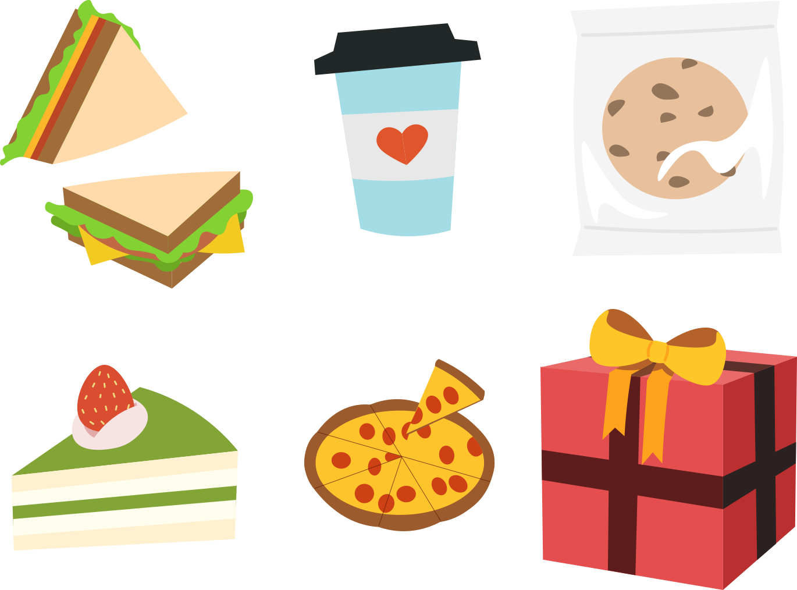

Buy Me a Coffee ☕
Nov 2019 | UI/UX
This was an interesting exercise in design where we created a redesign of a webpage...
without ever looking at the original webpage! Given a couple startups with an accompanying
description, we chose Buy Me a Coffee, which was described as "a platform for creators to receive
monetary support from their fans." Basically, you can think of it as Patreon v2.0.
This was also a team project! Meet the gang & what they were in charge of:
- Katherine Sang — prototyping, interaction
- Julie Wang — sketching, prototyping
- Dain Woods — user testing, writing
- Me — prototyping, illustrating
Sketching
The initial sketches were created by the lovely Julie Wang, who made 4 sets
of sketches, receiving our feedback every time.
Sketch #1
Sketch #2
Sketch #3
Sketch #4
We decided to go with sketch1 because the home page
best represented the diverse target audiences of users (artists, podcasters, educators),
while the profile page enabled the user to engage with its fans through posts and a
gallery of their content.
Sketch #2 and #4 attempted to recommend personal suggestions to users, but we realized
that Buy Me a Coffee was not created for user entertainment, as it's a donation
platform, and to bring in a larger customer base, creators have to feel
incentivized that their profiles might actually be seen. In the end, we went
with sketch #1 because it allowed the diverse
categories of creators to be presented in a more neutrally without algorithmic bias,
allowing more fairness in terms of what is advertised!
Style Sheet
This was the fun part! The first thing we did to get a feel for our design was
create a style sheet, which looks like this:

This was actually Julie and Katherine's idea. I had never thought about making
a style sheet before prototyping, and after doing it I highly recommend it to
everyone! I'm always grateful for what I learn from other designers.
For our font combination, we picked Quattrocentro Sans (sans serif) and Zilla Slab (slab serif)
as our fonts, as they make a playful, light impression.
For our color palette, we were coffee inspired (black, white, brown), with
some pastels thrown in for accents.
Illustrations
We also decided that we wanted to include illustrations to represent different
tiers of donation. So, for example $1 might be a coffee icon, while $10 might be
a cake. I had the pleasure of making the illustrations!

We represented most of the rewards as foods because we thought it could help
increase the donations user's receive. Showing the donors that they are buying
the creator a sandwich (i.e. lunch) encourages empathy and helps donors
conceptualize the financial impact of their donation.
The gift box is the odd one out, but there's a reason for that— it represents
a custom donation that the donor can choose.
Prototyping
Julie, Katherine, and I created the high fidelity mockups in Figma. We prioritized a
minimalistic design and tried to ensure that a user would not be confused by our layout.
Here are some key screenshots from the mockups:
If you'd like to see the interactive version, click here!
User Testing
Once we finished our prototype, Dain posted it on UserTesting.com, where three users were instructed
to complete the task "Donate one coffee to Jeff Huang." In general, users were able
to complete our tasks quickly. We discovered through feedback that there were some issues
with scrolling on the page, which likely causes the tasks to take longer than they should
have.
There was also some confusion about the task of donating because there are several
screens before the donation is finalized. We could likely cut down on the number of
confirmation quicks to streamline this process.
Reflection
todo